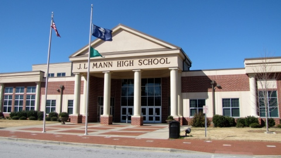

My past begins on November 29, 2002 in Orlando, FL. I was born in Orlando, and I lived in Kissimmee, FL in a house built by my parents. It was my parents first house, but we only lived there for two years. We then moved on to South Carolina in 2004 because my mom had a job offer in Greenville. We Also moved two times after, but were both in the same county. I started school at Brushy Creek Elemantary from 2009-2014, and Riverside Middle from 2014-2017. My past was very busy, but i also had fun outside of moving:
Now I am a 14 year old 9th Grader who goes to J.L. Mann High, I live in a new house in West Greenville, SC, and I have family of 4. My mom karen, my dad lloyd, my little brother riley, and a dog named bryce. My favorite thing to do in my spare time is make youtube videos on my own channel. I ride my four wheeler on trails, and go traveling with my family! I love to ride my four wheeler in my backyard, and public tracks/trails. I keep my self busy buy, cleaning the house, and taking care of my prize posessions. When i'm not doing either im either sick or im sleeping.
Keeping my self busy with things has been my number one priority for my present and future. I go to a church called Covenant United Methodist Church in Greer because I am christian. Also, I go to cool events hosted by Greenville. But, my favorite thing of all is spending time with my family and going camping. All in all, I try to live my present life the best I can because life wont last forever.
After high school I plan on being a pilot. To do that I need to go to college for 4 years, and do flight school. I want to fly across the world and discover things I havent yet. Ever since I was 5 I have wanted to be a pilot. I want to have a happy healthy, and fun family. I want to live in a house in either Colorado or South Carolina. Most of all, I want my future to be the best it will ever be!